1.相关博客
2.2-3 树
①定义
- 虽然它不是一种二叉树，但是它满足二分搜索树的基本性质。每次操作节点时，都按照二分搜索树的策略查找它的位置。
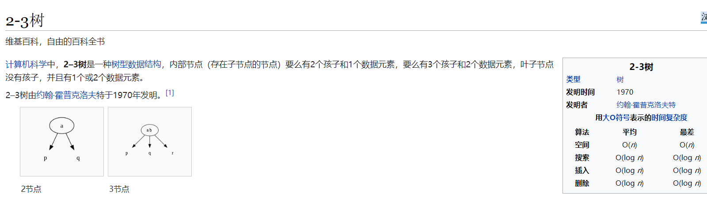
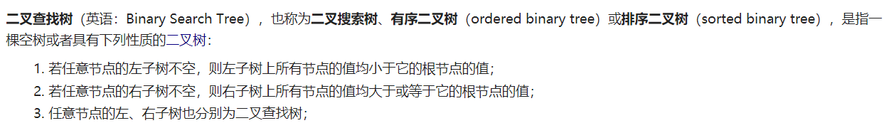
- 它有两种节点，一种节点可以存放一个元素（与普通的二分搜索树的节点一样，有左右两个孩子，左孩子的值小于该节点的值，右孩子的值大于该节点的值），另一种节点可以存放两个元素（有三个孩子，三个孩子分别在第一个元素的左侧、两个元素的中间和第二个元素的右侧。且这个节点左孩子的值小于左侧元素的值，中间孩子的值在两个元素之间，右孩子的值大于右侧元素的值），所以存放两个元素的节点也满足二分搜索树的基本性质。
- 2-3 树的每个节点有 2 个或者 3 个孩子，通常将存放一个元素且有两个孩子的节点叫做 2 节点，将存放两个元素且有三个孩子的节点叫做 3 节点。
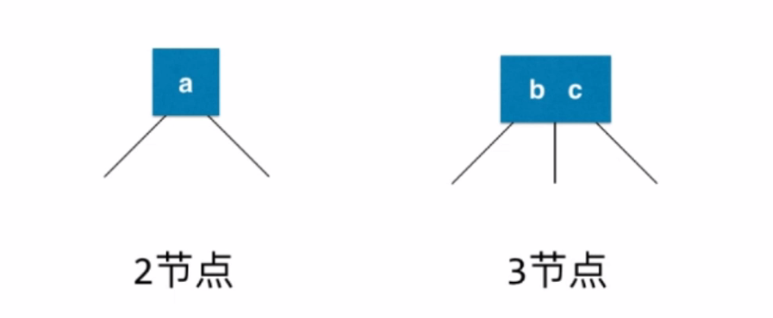
- 下图为一颗 2-3 树：
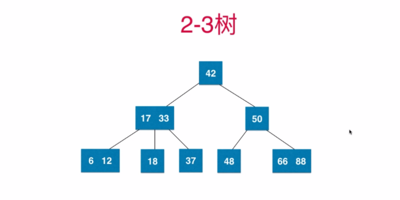
②性质—绝对平衡性
- 2-3 树是一颗绝对平衡的树（与 2-3 树本身插入元素时的构建方法相关）
- 绝对平衡：从根节点到任意一个叶子节点所经过的节点数量一定是相同的（即对于任意一个节点来说，左右子树的高度一定是相同的，可以将 2-3 树类比为满二叉树）
- 2-3 树如何维持绝对的平衡：添加节点将永远不会添加到一个空的位置，只会和最后找到的叶子节点做融合，若最后找到的叶子节点是 2 节点，则添加进 2 节点，形成一个 3 节点，否则添加进 3 节点，暂时形成一个 4 节点，然后对 4 节点做一个变形处理，形成由三个 2 节点组成的子树。
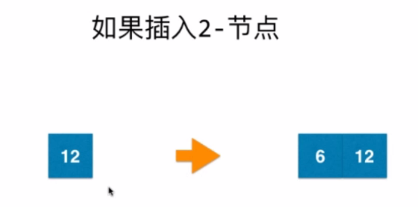
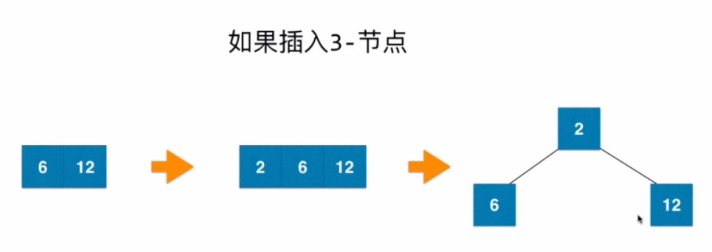
- 若暂时形成的 4 节点是根节点，则变形处理即可。
- 若暂时形成的 4 节点是叶子节点，则在变形处理后，将子树的根节点继续向其父亲节点（即变形处理前 4 节点的父亲节点，简称 A）融合。如果 A 为 2 节点，则融合后 A 变成一个 3 节点，子树中剩下的两个节点变为 A 的左孩子和中孩子（或者中孩子和右孩子）。如果 A 为 3 节点，则暂时形成一个 4 节点，然后对 4 节点做一个变形处理，再形成由三个 2 节点组成的子树，将子树的根节点继续向其父亲节点融合……直到融合到根节点或者 2 节点。
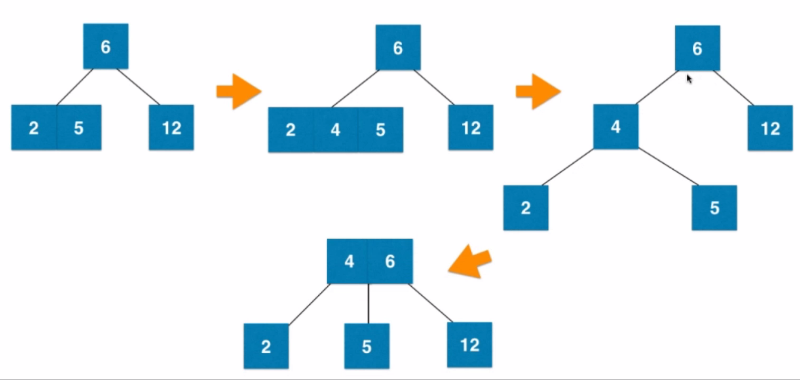
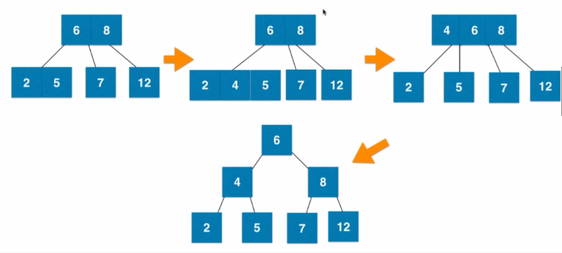
③模拟添加节点的过程
- 下面我们通过向 2-3 树中添加节点，来看看 2-3 树是如何维持绝对平衡的。
- 添加第一个节点：作为根节点，形成一个 2 节点。
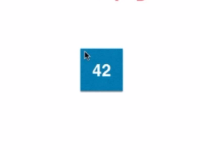
- 添加第二个节点：和最后找到的叶子节点（42）做融合，形成一个 3 节点。

- 添加第三个节点：和最后找到的叶子节点（37 | 42）做融合，暂时形成一个 4 节点，然后将 4 节点变形成由三个 2 节点组成的平衡的树。
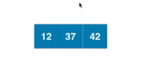
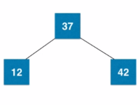
- 添加第四个节点：和最后找到的叶子节点（12）做融合，形成一个 3 节点。
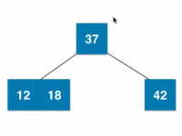
- 添加第五个节点：和最后找到的叶子节点（12 | 18）做融合，暂时形成一个 4 节点，然后将 4 节点变形成由三个 2 节点组成的子树，将子树的根节点（12）继续向上融合，融合后形成一个 3 节点。
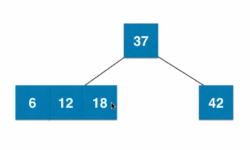
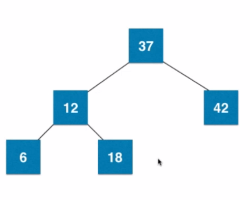
- 添加第六个节点：和最后找到的叶子节点（6）做融合，形成一个 3 节点。
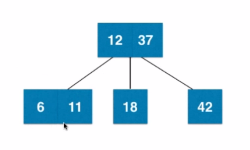
- 添加第七个节点：和最后找到的叶子节点（6 | 11）做融合，暂时形成一个 4 节点，然后将 4 节点变形成由三个 2 节点组成的子树，将子树的根节点（6）继续向上融合，融合后又形成一个 4 节点，继续将 4 节点变形成由三个 2 节点组成的子树，此时已经融合到根节点，表示添加成功。
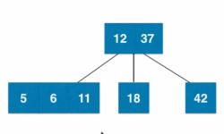
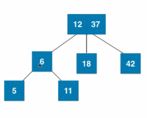
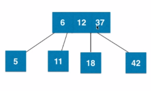
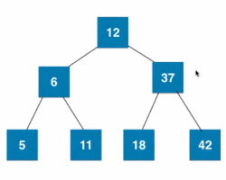
④红黑树和 2-3 树的等价性
- 红黑树本质上与 2-3 树是等价的
- 2-3 树是包含两种节点（2 节点和 3 节点）的树结构，而红黑树是包含一种节点（每个节点只能存储一个元素）的树结构。虽然红黑树与 2-3 树的数据结构不同，但是它们实现了相同的逻辑。
- 红黑树是一种自平衡的二分搜索树，在红黑树中，对每一个节点都附着了一个颜色 — 红色或者黑色。
- 黑色节点：普通节点，表示在原来的 2-3 树中的 2 节点。
- 红色节点：和其父亲节点（黑色节点）一起表示在原来的 2-3 树中的 3 节点
- 左倾红黑树：所有的红色节点都是向左倾斜的。左倾红节点来表示 2-3 树中的 3 节点（2-3 树的 3 节点的左边元素在红黑树中通过红色节点（简称 A）表示，3 节点的右边元素在红黑树中通过黑色节点（简称 B）表示，并且 A 是 B 的左孩子，表示 A 与 B 在原来的 2-3 树中是并列关系，一起存放在一个 3 节点中）。
- 右倾红黑树：所有的红色节点都是向右倾斜的。右倾红节点来表示 2-3 树中的 3 节点（2-3 树的 3 节点的左边元素在红黑树中通过黑色节点（简称 A）表示，3 节点的右边元素在红黑树中通过红色节点（简称 B）表示，并且 B 是 A 的右孩子，表示 A 与 B 在原来的 2-3 树中是并列关系，一起存放在一个 3 节点中）。
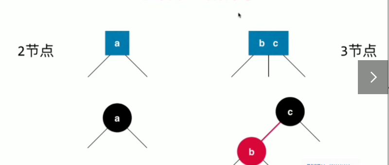
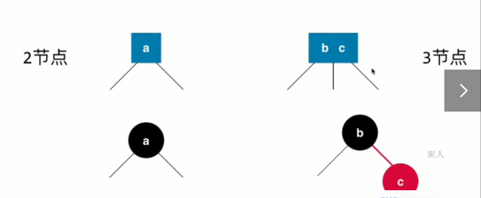
ps：左倾红黑树是红黑树相对标准的一种实现方式，但并不是唯一的实现方式，这篇博客的后续内容都以左倾红黑树为例进行分析。
- 与 2-3 树等价的红黑树：2-3 树中有三个 3 节点 —> 红黑树中有三个红色节点，每一个 3 节点产生一个红色节点。
- 对于任何一颗 2-3 树，我们都可以使用以上规则将之转化成一颗红黑树。
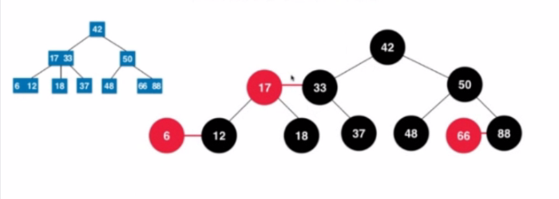
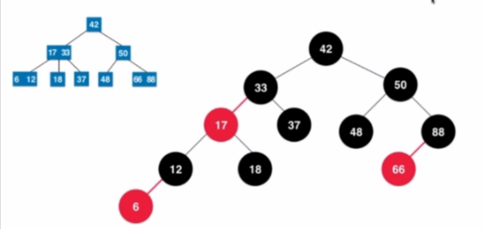
3.红黑树
①概念
- 红黑树（Red Black Tree）是一种自平衡的二分搜索树，它在每个结点上增加一个存储位来表示结点的颜色，可以是 Red 或 Black。红黑树通过对任意一条从根到叶子的路径上的各个结点着色方式的限制，确保没有一条路径会比其他路径长出两倍，因而是接近平衡的。
- 下图为一颗红黑树：
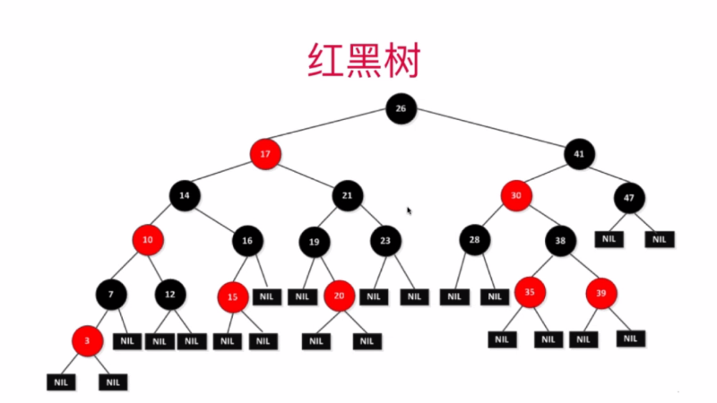
②基本性质
- 红黑树必须满足如下条件：
- ①（定义）每个节点或者是红色的，或者是黑色的。
- ②根节点是黑色的
- 在 2-3 树中，根节点或者是 2 节点，或者是 3 节点，而 2 节点和 3 节点在与之等价的红黑树（左倾红黑树）中表示为下图的两种情况。
- 由下图可见， 2-3 树中的 2 节点和 3 节点对应到与之等价的红黑树中，根节点都是黑色的。
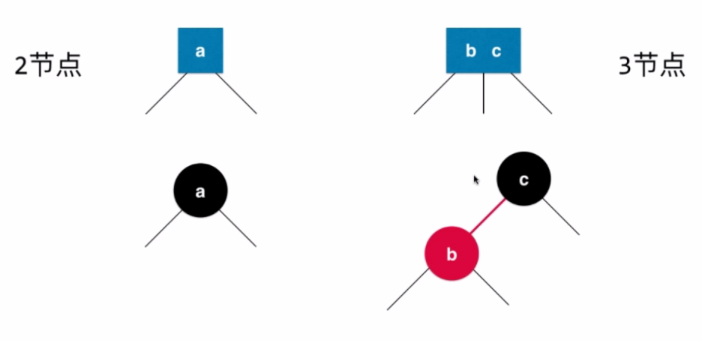
- ③（定义）每一个叶子节点（这里的叶子节点指的是最后的空节点）是黑色的
- 相当于定义空节点本身是黑色的， 一颗空树本身也是一颗红黑树，它的根节点和叶子节点都是空节点（空节点是黑色节点），同时满足 ②、③ 条性质。
- ④如果一个节点是红色的，那么它的孩子节点都是黑色的。
- 在红黑树中，只有表示原来的 2-3 树中的 3 节点时，才会出现红色节点。此时红色节点的两个孩子节点是原来的 2-3 树中 3 节点的左孩子和中间的孩子，不管两个孩子是 2 节点还是 3 节点，其对应到红黑树中，根结点都是黑色的（具体见 性质②）。
- 黑色节点的右孩子一定是黑色的节点（对于左倾红黑树来说，这是我们的定义），它的左孩子可能是红色的节点，也可能是黑色的节点。如果是红色的，表示这两个节点是原来的 2-3 树中的一个 3 节点。如果是黑色的，表示这两个节点是原来的 2-3 树中的两个节点。
- ⑤（核心）从任意一个节点到其每个叶子节点（空节点），经过的黑色节点数量是一样的。
- 2-3 树是一颗绝对平衡的树，从 2-3 树的任意一个节点出发到其每个叶子节点，经过的节点数量是一样的。
- 因为 2-3 树的 2 节点或 3 节点转换成红黑树中的节点表示时，都会有一个黑色的节点，所以从红黑树的任意一个节点出发，每经过一个黑色节点，等于一定经过了原来的 2-3 树中的某个节点。
- 红黑树是保持 “黑平衡” 的二叉树（黑平衡是指从根节点到任意一个叶子节点，经过的黑色节点数量是一样的）。从严格意义上讲，红黑树不是平衡二叉树，平衡二叉树的定义为左右子树的高度差不能超过 1，红黑树并不符合。
③数据结构
1 | public class RBTree { |
- 为什么默认的节点颜色为红色？
- 在 2-3 树中添加一个节点，永远是和最后找到的叶子节点做融合，融合后或者形成一个 3 节点，或者形成一个临时的 4 节点。在红黑树中，红色节点代表它和它的父亲节点（黑色节点）在原来的 2-3 树中是在一起的，等价于 2-3 树中的一个 3 节点。所以在红黑树中，总是将新添加的节点的颜色设置为红色，等价于在 2-3 树中永远将新节点融合进已有的节点中。
- 在红黑树中添加红色节点后，可能会破坏红黑树的基本性质，此时需要再做一些调整工作（具体见下文）。
④保持根节点为黑色
红黑树中添加新元素之保持根节点为黑色
- 添加根节点：添加第一个红色节点，作为红黑树的根节点。由红黑树的基本性质②（根节点是黑色的）可知，需要将根节点变成黑色。
- 结论：若插入的红色节点是红黑树的根结点，应该将红色节点变为黑色节点。
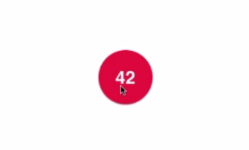
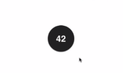
- 添加普通节点：在原来的 2-3 树中添加元素 4 时，元素 4 应该添加到元素 2 和元素 5 组成的 3 节点中，形成一个临时的 4 节点（2 | 4 | 5）。然后将临时的 4 节点变形成由三个 2 节点组成的子树，让子树的根节点（即节点 4） 向上融合（与元素 6 和元素 8 所在的 3 节点进行融合），再形成一个临时的 4 节点（4 | 6 | 8），然后再将它变形成由三个 2 节点组成的子树，此时这颗子树的根节点是整棵 2-3 树的根节点，不再向上融合。由于元素 4 和元素 6 在原来的 2-3 树中是向上融合的，所以在与之等价的红黑树中，它们所在的节点是红色的。由于节点 6 是最后的根节点，所以在与之等价的红黑树中，元素 6 所在的节点是黑色的。
- 结论：对于临时的 4 节点，在 2-3 树的添加过程中每次都要向上融合一个元素，这个元素所在的节点在红黑树的表示中应该是红色的节点。直到它融合到了根节点，再也不能向上走时，变为黑色的节点。
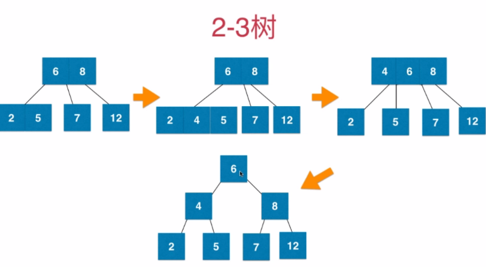
- 代码实践：保持根节点为黑色
1 | /** |
⑤左旋转
- 向 2-3 树的 2 节点中添加一个新元素的第一种情况 —> 对应到红黑树中表示：如下图所示。
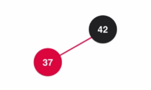
- 在上图的红黑树中，添加的新元素（红色节点）在黑色节点的左侧：直接添加（对应 2-3 树中的一个 3 节点）
- 向 2-3 树的 2 节点中添加一个新元素的第二种情况 —> 对应到红黑树中表示：如下图所示。
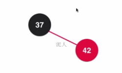
- 在上图的红黑树中，添加的新元素（红色节点）在黑色节点的右侧：先添加（此时红黑树不满足我们定义的左倾红黑树的性质) 、再调整（进行一次左旋转）。
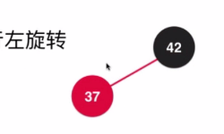
- 左旋转的过程（注意：旋转前后的红黑树都要满足二分搜索树的性质）
- 让 x 的左子树 T2 变成 node 的右子树
- 让 node 变成 x 的左子树
- 维护节点的颜色
- x 的颜色等于 node 的颜色（可能是红色，也可能是黑色）。因为在左旋转之前的树中，node 是根节点，现在 x 变成了根节点，根节点的颜色应该保持一致。
- node 的颜色应该设置为红色。在原来的 2-3 树中，新加入的节点 42 与 37 形成了一个新的 3 节点。通过左旋转之后，并没有改变 3 节点中的两个元素，只是置换了两个元素的位置（在红黑树中）。所以为了表示它们在旋转前后都是原来的 2-3 树中的同一个 3 节点，node 节点要设置为红色。
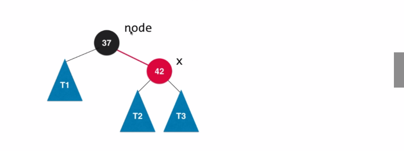
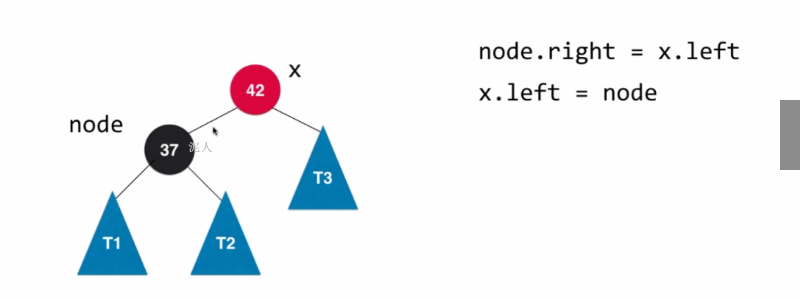
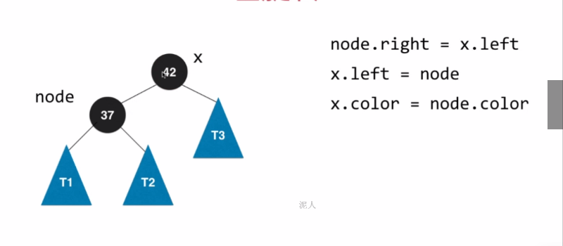
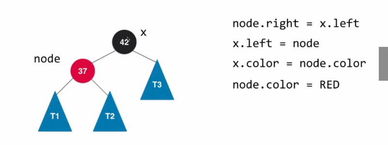
- 注意：
- 左旋转只是一个子过程，在左旋转的过程中并不维持红黑树的性质，我们只需要通过旋转操作让两个元素对应是原来的 2-3 树中的一个 3 节点即可。
- 在左旋转之后有可能产生两个连续的红色节点。
- 代码实践：左旋转
1 | /** |
⑥颜色翻转
- 向 2-3 树的 3 节点中添加一个新元素的第一种情况 —> 对应到红黑树中表示：如下图所示。

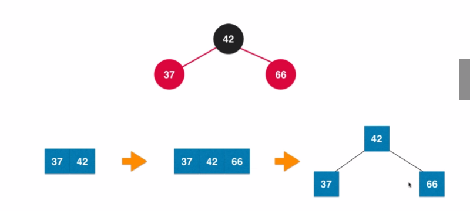
- 在上图的红黑树中添加一个新元素 66，应该添加到 42 的右孩子。—> 对应到 2-3 树中表示：原来的 2-3 树中有一个 3 节点（37 | 42），添加一个新元素 66，形成一个临时的 4 节点（37 | 42 | 66）。
- 然后将临时的 4 节点变形成由 3 个 2 节点组成的子树。 —> 对应到红黑树中表示：三个节点都应该是黑色的节点，我们需要将两个红色节点的颜色翻转成黑色。
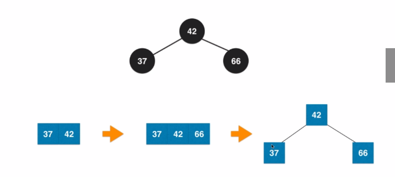
- 最后由 3 个 2 节点组成的子树的根节点要继续向上与其父亲节点进行融合。—> 对应到红黑树中表示：需要将根节点的颜色翻转成红色。
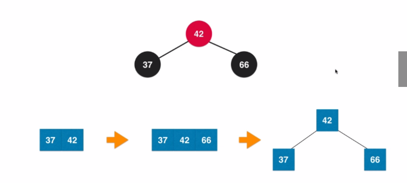
- 代码实践：颜色翻转
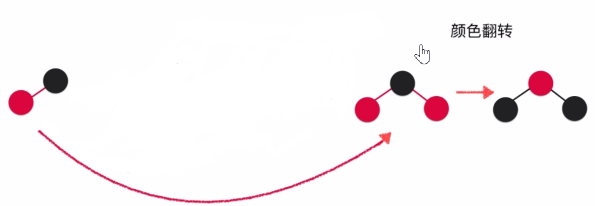
1 | /** |
⑦右旋转
- 向 2-3 树的 3 节点中添加一个新元素的第二种情况 —> 对应到红黑树中表示：如下图所示。
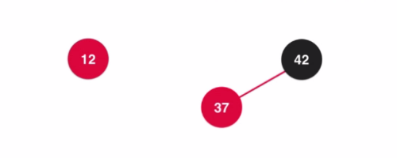
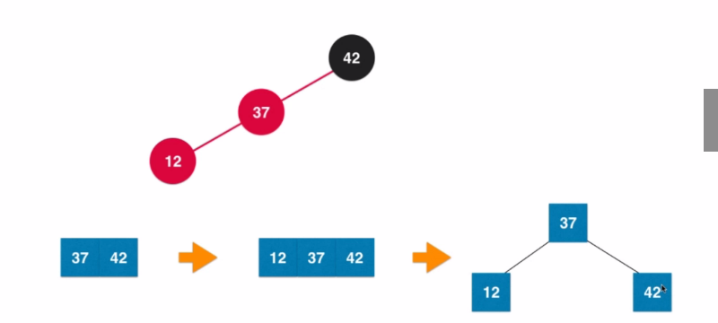
- 在上图的红黑树中添加一个新元素 12，应该添加到 37 的左孩子。—> 对应到 2-3 树中表示：原来的 2-3 树中有一个 3 节点（37 | 42），添加一个新元素 12，形成一个临时的 4 节点（12 | 37 | 42）。
- 然后将临时的 4 节点变形成由 3 个 2 节点组成的子树 —> 对应到红黑树中表示：需要先对节点 42 进行一次右旋转，右旋转之后，红黑树的结构满足进行颜色翻转的条件，此时再对红黑树进行一次颜色翻转，具体见 ⑥颜色翻转。
- 右旋转的过程（注意：旋转前后的红黑树都要满足二分搜索树的性质）
- 让 x 的右子树 T1 变成 node 的左子树
- 让 node 变成 x 的右子树
- 维护节点的颜色
- x 的颜色等于 node 的颜色（可能是红色，也可能是黑色），因为在右旋转之前的树中，node 是根节点，现在 x 变成了根节点，根节点的颜色应该保持一致。
- node 的颜色应该设置为红色。因为在右旋转之后，三个节点对应到原来的 2-3 树中还是临时的 4 节点，所以 node 节点是红色表示它和它的父亲节点在原来的 2-3 树中是融合在一起的。
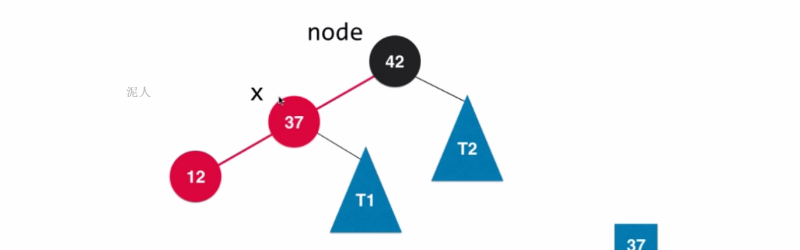
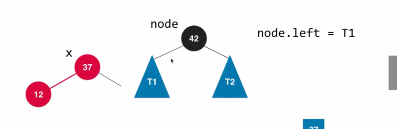
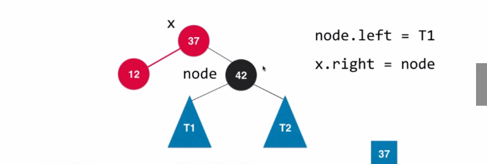
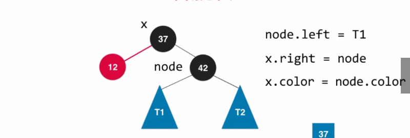
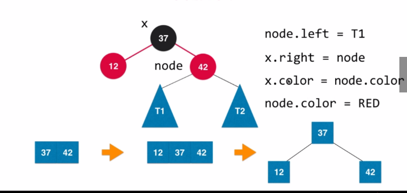
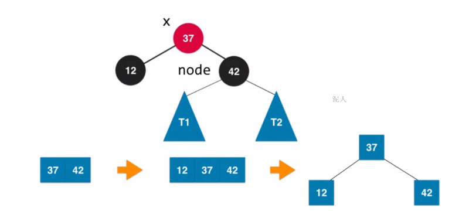
- 代码实践：右旋转
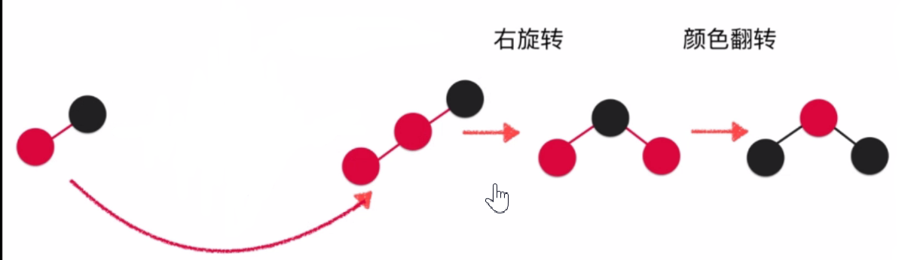
1 | /** |
- 向 2-3 树的 3 节点中添加一个新元素的第三种情况 —> 对应到红黑树中表示：如下图所示。
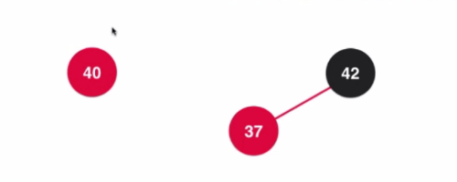
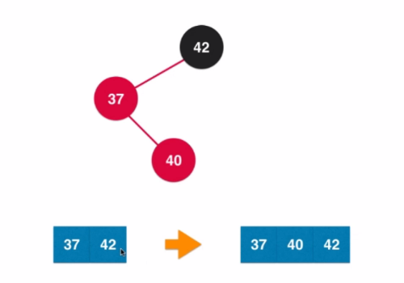
- 在上图的红黑树中添加一个新元素 40，应该添加到 37 的右孩子。—> 对应到 2-3 树中表示：原来的 2-3 树中有一个 3 节点（37 | 42），添加一个新元素 12，形成一个临时的 4 节点（37 | 40 | 42）。
- 然后将临时的 4 节点变形成由 3 个 2 节点组成的子树 —> 对应到红黑树中表示：需要先对节点 37 进行一次左旋转，左旋转之后，红黑树的结构满足进行右旋转的条件，此时再对红黑树进行一次右旋转，具体见 ⑦右旋转。
⑧添加新元素
- 下图总结了在红黑树中添加新元素的所有情况：
- 添加新元素后维护红黑树性质的方法：使用二分搜索树的策略将新元素添加进红黑树后，按照上图顺序依次判断该子树是否需要左旋转、右旋转和颜色翻转，然后将维护后的新的根节点返回给递归调用的上一层，在上一层继续维护红黑树的性质。
- 代码实践：添加新元素
1 | /** |
⑨删除新元素
⑩代码实现 + 测试
- 查找方法与二分搜索树（红黑树是一种自平衡的二分搜索树）的查找方法一致
- 前序、中序、后序和层序遍历方法与树的遍历方法一致
- 红黑树的全部操作如下：
1 | package tree.redblacktree; |
- 测试红黑树的代码：
1 | package tree.redblacktree; |
- 通过前序、中序、后序和层序遍历的结果可以推算出红黑树的结构：
- 也可以推算出与其等价的 2-3 树的结构：
4.常见面试问题
①红黑树的数据结构是怎么定义的？
- 具体见 3.红黑树—③数据结构
②红黑树有哪些性质？
- 具体见 3.红黑树—②基本性质
③红黑树的各种操作的时间复杂度是多少？
- 最大高度：
2logn（logn个红色节点 +logn个黑色节点，此时该条路径上每一个黑色节点的左孩子都是红色节点。） - 增删改查的时间复杂度：
O（logn）
④红黑树相比于 BST 和 AVL 树有什么优点？
- BST：最大高度不定，可能会退化为链表。
- 优点：内部实现简单，没有复杂的维持平衡的操作。对于完全随机的数据，并不会退化为链表。
- 缺点：极端情况会退化为链表（数据按顺序进入二分搜索树时）或者高度不平衡（数据近乎有序时）
- AVL 树：采用了平衡二叉树的策略，最大高度为
logn，且不会退化为链表，对于查询操作（get、set、contain 等方法）性能较高。 - 红黑树：并不完全满足平衡二叉树的定义，最大高度为
2logn，它可以保持自平衡而不会退化为链表，对于插入和删除操作（insert、delete 等方法）性能较高。 - AVL 树和红黑树的对比：
- 它们都是在二分搜索树的基础上添加了一些其他的性质，来保证自己不会退化为链表。
- 红黑树的增删操作快于 AVL 树，查找操作慢于 AVL 树（因为 AVL 树的最大高度是
logn，红黑树的最大高度是2logn，它们是常数级别的差异），所以 AVL 树适用于查询较多的情况，而红黑树适用于插入和删除较多的情况。 - 红黑树的统计性能更优，虽然其时间复杂度与 AVL 树是同一个级别的，但是综合增删改查所有的操作，红黑树在平均情况下更好一些。
- 总结：红黑树相对于 AVL 树来说，牺牲了部分平衡性以换取插入 / 删除操作时少量的旋转操作，整体性能要优于 AVL 树。
⑤红黑树的应用？
- 由于红黑树的统计性能（综合增删改查所有的操作）更优，所以很多语言内部的容器类中的有序映射都是基于红黑树实现的。例如：Java 中的 TreeMap、TreeSet、JDK 1.8 后的 HashMap 和 C++ 的 STL 中的 map 和 set。
- Java集合框架总结+源码分析
附录
- 我的个人博客：messi1002.top
- 如有错误或疑惑之处 请联系 wjymessi@163.com